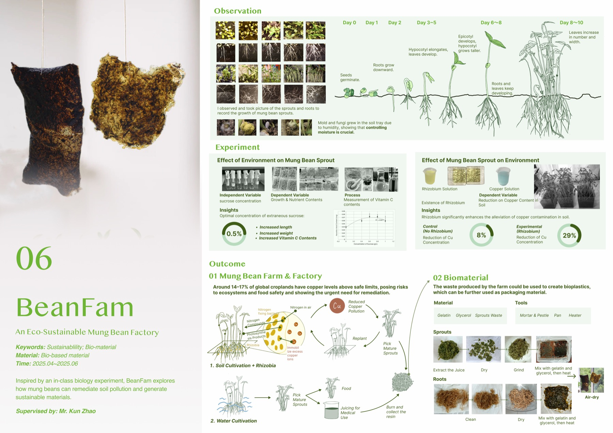

INDEX / 06
BeanFam
Sustainability / Biomaterial · 2025.04 — 2025.06
An eco-sustainable mung bean factory: Rhizobium-inoculated beans cut copper in contaminated soil by 29% (vs 8% control). The harvest becomes food and juice; the waste becomes bioplastic sheets. Full growth-cycle documentation, sucrose and vitamin-C experiments, gelatin–glycerol prototyping.
